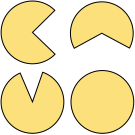

Quentin Delfosse
Machine Learning Group, Computer Science Department, TU Darmstadt.
Hochschulstrasse 1, Room S1|03 077, 64289 Darmstadt, Germany
 quentindelfosse.me
quentindelfosse.me
 quentin (dot) delfosse (at) cs (dot) tu-darmstadt (dot) de
quentin (dot) delfosse (at) cs (dot) tu-darmstadt (dot) de
quentindelfosse.me
quentin (dot) delfosse (at) cs (dot) tu-darmstadt (dot) de
Meetings by appointment.
Mission. We show that current reinforcement learning agents are not able to adapt to task simplification. I focus on creating RL agents that leverage human inductive biases to learn meaningful policies, that can be used on simpler environments. Here is an outlook of my PhD research.
Timeline.
| 2020 - now: | Ph.D. student at the Machine Learning Lab, CS Department, TU Darmstadt, Germany |
| 2017 - 2019: | M.Sc. MoSIG in Computer Science at UGA Grenoble (Double Diploma), France |
| 2016 - 2019: | Dipl. Ing. in Computer Science at ENSIMAG Grenoble, France |
| 2014 - 2016: | Higher School Preparatory Class at Lycée Buffon Paris, France |
Projects.
Neural Plasticity for Deep RL
Allowing learning structure to embed high plasticity (with rationals) is crucial for dynamic RL environments.
Object Detection with Time Consistency
Using space-time consistency to better detect and understand objects.
| 2021 | Siyao Chen, Comic Generation with Rational Generation Model, M.Sc. Thesis, co-supervision Arseny Skryagin |
| 2021 | Maximilian Otte, Creating Emojis with Generative Adversarial Neural Cellular Automata, M.Sc. Thesis, co-supervision Johannes Czech |
| 2021 | Julius Zimmermann, Evaluation and Showcasing of Rational Functions, M.Sc. Thesis, co-supervision Patrick Schramowski |
| 2020 | Patrick Vimr, Optimizing the analysis of Rational Networks applied to Deep Reinforcement Learning-Algorithms, B.Sc. Thesis |
| WS 2020/21 | Quentin Delfosse, Patrick Schramowski, Improving the Rational Activation Functions library, Bachelor Praktikum |
Publications
Loading publications…